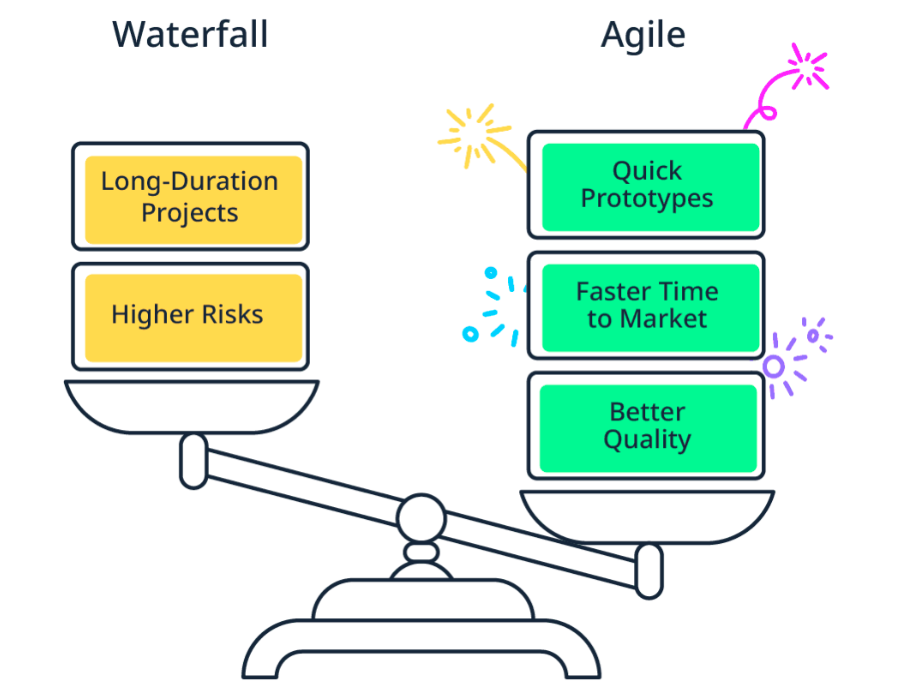

En este módulo aprenderás más sobre Mendix y dónde podrás encontrar toda la información
¡Nos alegra que estés aquí! Esta ruta de aprendizaje está diseñada para cualquier persona que quiera aprender a crear aplicaciones utilizando la plataforma Mendix, sin importar si tienes conocimientos técnicos previos. A lo largo de esta ruta, aprenderás a manejar la plataforma de manera práctica y podrás desarrollar tus propias aplicaciones de manera rápida y efectiva.
Crear tu perfil para mostrar tu nivel y habilidades dentro de la Comunidad Mendix. La insignia se vuelve verde al aprobar la certificación y puede hacerse pública para demostrar tus competencias como Desarrollador Rápido.
En este módulo has aprendido sobre el ecosistema de Mendix, la interfaz de la Academia y cómo configurar tu perfil de comunidad para comenzar tu ruta de aprendizaje como Desarrollador Rápido.
En este módulo aprenderás a gestionar proyectos y colaborar efectivamente con tu equipo
Al finalizar este módulo, usted podrá:
Captura El ciclo de vida de la aplicación comienza aquí. Mendix facilita el proceso de ideación ofreciendo diversas funciones de colaboración. Por ejemplo, puedes usar Buzz para generar ideas con tus compañeros de equipo, hacer preguntas, crear una encuesta y tomar decisiones. Desarrollar Luego, el equipo accede a Studio Pro. Mendix ofrece un sistema donde todos los miembros del equipo pueden colaborar entre sí. Sincroniza y controla el proceso de desarrollo de la aplicación mediante el Portal de Mendix y Team Server. Con el control de versiones, puedes integrar el trabajo de varios desarrolladores en una sola versión. Desplegar Cuando la aplicación está lista para probarse o lanzarse, Mendix se encarga de la fase de implementación con un solo clic. Los usuarios pueden acceder directamente desde su móvil, portátil u otros dispositivos. Iterar/Retroalimentación Una vez que acceden a ella, los usuarios pueden proporcionar comentarios directamente desde la aplicación. Los desarrolladores pueden ver y gestionar los comentarios en el Portal de Mendix. ¡Esto da inicio a una segunda fase de captura! El ciclo se repite según sea necesario hasta que la aplicación esté completa, lo que se denomina iteración . Mendix apoya a ALM porque desarrollar aplicaciones transformadoras a gran velocidad requiere experimentación rápida, iteraciones frecuentes y una estrecha colaboración entre la empresa y el departamento de TI. Mientras que muchas herramientas de desarrollo de aplicaciones se centran en la implementación, Mendix apoya cada etapa del ciclo. Reúne a equipos pequeños e interdisciplinarios y crea un lenguaje común entre la empresa y el departamento de TI.
Para este curso, trabajaremos con LearnNow, una plataforma de aprendizaje en línea que permite a los usuarios acceder a cursos, realizar seguimiento de su progreso y obtener certificaciones. A lo largo de los módulos, construiremos esta aplicación paso a paso.
Para crear una nueva aplicación en Mendix:
Explora el Buzz Una vez creada tu aplicación, verás el Buzz del Proyecto. Es como una cronología del desarrollo de la aplicación de gestión de formación LearnNow. Es diferente del Buzz de la empresa. Si tienes compañeros que también trabajan con Mendix, puedes comunicarte con ellos en el Buzz de la empresa y ver qué aplicaciones han creado.
El desarrollo de aplicaciones transformadoras requiere experimentación rápida, iteración frecuente y una estrecha colaboración entre la empresa y el departamento de TI. La solución moderna a estos problemas se denomina desarrollo ágil. Con Agile, la productividad y los resultados del proyecto mejoran al priorizar la velocidad y, por supuesto, la agilidad.
En un proyecto de Mendix, es común tener los siguientes roles:
Colaborar efectivamente requiere un equipo bien organizado. En el Portal de Mendix puedes gestionar los miembros de tu equipo, asignar roles y establecer permisos.
Para invitar miembros:
Las historias de usuario describen funcionalidades desde la perspectiva del usuario final. Siguen el formato: "Como [tipo de usuario], quiero [acción] para [beneficio]". Las historias de usuario son la base para el desarrollo ágil y ayudan a mantener el enfoque en las necesidades del usuario.
Ejemplo de historia de usuario para LearnNow:
"Como estudiante llamado Jimmy, quiero poder buscar cursos por categoría para encontrar rápidamente los temas que me interesan."
Los wireframes son bocetos visuales de la interfaz de usuario que ayudan a planificar la estructura y el diseño de las páginas antes de comenzar el desarrollo. Puedes usar herramientas como Figma, Balsamiq o simplemente papel y lápiz.
Para la página de inicio de LearnNow, considera incluir:
Las épicas son grandes cuerpos de trabajo que se pueden dividir en historias de usuario más pequeñas. Por ejemplo, una épica para LearnNow podría ser "Gestión de usuarios", que incluiría historias como "Registro de usuario", "Inicio de sesión" y "Recuperación de contraseña". La página de Planificación es donde organizarás tu trabajo y refinarás o planificarás historias para los próximos sprints. La página de planificación consta de cuatro secciones: Sprint activo, que incluye las historias que se muestran en su tablero. Próximo Sprint, que contiene historias refinadas y listas para ser elegidas para el próximo sprint. Refinamiento, que debe contener las historias que se asignarán en una sesión de refinamiento. Backlog, que contiene todas las historias de usuario que no encajan en ninguna de las otras tres categorías. Puede que estén sin refinar, en espera de algo o simplemente no se hayan movido a la categoría correcta.
Para agregar una historia de usuario en el Portal de Mendix:
Puedes importar historias de usuario desde archivos Excel o CSV para agilizar la configuración inicial del proyecto. Esta función es útil cuando tienes un backlog grande preparado previamente.
Para crear una épica:
Para iniciar un sprint:
En este módulo has aprendido a gestionar el ciclo de vida de las aplicaciones, crear un proyecto, organizar tu equipo, trabajar con historias de usuario y épicas, y planificar sprints. Estas habilidades son fundamentales para colaborar efectivamente en proyectos de Mendix.
En este módulo comenzarás a construir tu aplicación utilizando Mendix Studio Pro
Al finalizar este módulo, serás capaz de:
Ahora que has planificado tu proyecto y organizado tu equipo, es momento de comenzar a construir la aplicación. En esta fase, utilizarás Mendix Studio Pro para crear las interfaces de usuario y la funcionalidad básica de tu aplicación LearnNow.
Mendix Studio Pro es el entorno de desarrollo integrado (IDE) donde construirás tu aplicación. La interfaz incluye:
Para crear la página de inicio:
Las columnas y filas son contenedores estructurales que te permiten organizar el diseño de tus páginas. Puedes usar layouts con diferentes números de columnas (1, 2, 3, 4, etc.) para crear diseños responsivos y atractivos.
Ajusta la cuadrícula de diseño de los botones de la página de inicio. La página de inicio viene con uno preinstalado. Haz clic derecho donde dice "columna" y añade tres columnas más. Ahora, ajustaremos la estructura de las columnas para tabletas. Actualmente, las columnas están en una fila horizontal, igual que en el diseño de escritorio, pero queremos que estén en una cuadrícula, como en el wireframe. Haga doble clic en una columna y se abrirá la ventana Editar columna de cuadrícula de diseño . Seleccione Manual para el ancho de la tableta y configure el tamaño de la tableta en 6. Mantenga los demás campos con sus valores predeterminados. Repita estos pasos en las demás columnas.
Tras configurar el diseño de la página de inicio, es hora de completarlo y hacerlo útil. Puedes hacerlo creando botones, ya que quieres poder navegar a otras páginas desde la página de inicio. No importa que estas páginas aún no estén disponibles; las añadiremos después de crear los botones.
Arrastra los botones desde la Caja de herramientas a tu página. Configura cada botón: Cambia el título (ej. “Cursos”). Selecciona un ícono adecuado (ej. libro cerrado, map-location-pin, user, graduation-hat). Aplica estilos desde la pestaña Apariencia: Tamaño: Grande Ancho completo: Sí Repite con los demás botones (Ubicaciones, Profesores, Aprendices). Ajusta el diseño para tabletas y dispositivos móviles. Guarda tu trabajo frecuentemente: Archivo > Guardar todo o Ctrl + S. Studio Pro guarda
Se crean nuevas páginas en Mendix a partir del módulo MyFirstModule. Se agrega una página llamada Course_Overview, con diseño Atlas_Default y plantilla Lista. Se repiten los mismos pasos para crear tres páginas más: Descripción general de la ubicación, Resumen del profesor y Resumen del aprendiz, todas con el mismo diseño y plantilla. Aparecen cuatro errores, pero se resolverán al configurar las páginas. Luego, se personalizan los títulos de cada página en el encabezado: Resumen del curso, Resumen de la ubicación, Resumen del profesor y Resumen del alumno.
Vincular páginas a los botones: En la página de inicio, selecciona un botón. En Propiedades, cambia el evento “Al hacer clic” a “Mostrar una página”. Elige la página correspondiente y selecciona Aceptar. Repite el proceso con los demás botones (Cursos, Ubicaciones, Profesores, Aprendices). 👉 Consejo: También puedes crear páginas nuevas directamente desde las propiedades de un botón.
En Mendix, los errores aparecen con puntos rojos y mensajes en el panel de errores. Estos indican configuraciones incorrectas o pendientes y deben resolverse para poder ejecutar la aplicación. Al hacer doble clic en un mensaje se abre el elemento con el problema. En este caso, los cuatro errores se deben a que las vistas de lista no tienen una entidad configurada como fuente de datos. Más adelante se a prenderá a solucionarlo. Además, se explica la importancia de guardar el trabajo de forma permanente.
Team Server: repositorio en la nube de Mendix para colaboración y control de versiones. Acceso: ser miembro del proyecto y tener permisos de edición. Copia de trabajo: versión local donde haces cambios antes de subirlos. Cambios: se muestran en el Explorador y el panel de Cambios. Commit: envía cambios al repositorio; deben ser pequeños, claros y sin errores. Actualizar: trae a tu copia los cambios de tus compañeros. 👉 Permite trabajar en equipo de forma ordenada y segura.
Confirmar cambios Comparta todo lo que has hecho con el Team Server para que sea imposible perder tu trabajo y puedas compartirlo con otros. Vaya a Control de versiones y haga clic en Confirmar. Mendix te avisará de que hay errores en tu proyecto. Responde "Sí" , pero aún así quieres confirmar. Tu aplicación nunca se ha ejecutado, así que confirmar errores no tiene ningún efecto. Escriba un mensaje de confirmación descriptivo y seleccione a qué historia de usuario está vinculada esta confirmación. Haga clic en Aceptar.
Se pueden usar Paquetes de Aplicaciones (.mpk) para cargar versiones idénticas de una app en Studio Pro. Pasos: descargar el archivo .mpk → abrir Studio Pro → Archivo > Importar paquete de aplicación… → seleccionar el archivo → aceptar. Opcional: crear la app solo localmente y habilitar Team Server más tarde si se desea.
En este módulo, pasó de capturar los requisitos a crear su aplicación y utilizó Studio Pro para crear las primeras páginas de su aplicación desde cero. ¡Felicitaciones! ¡Ya tienes páginas atractivas e intuitivas! Continúa con el siguiente módulo para aprender a mostrar datos dinámicos en las páginas que acabas de crear.